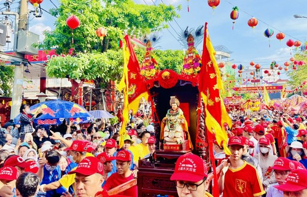
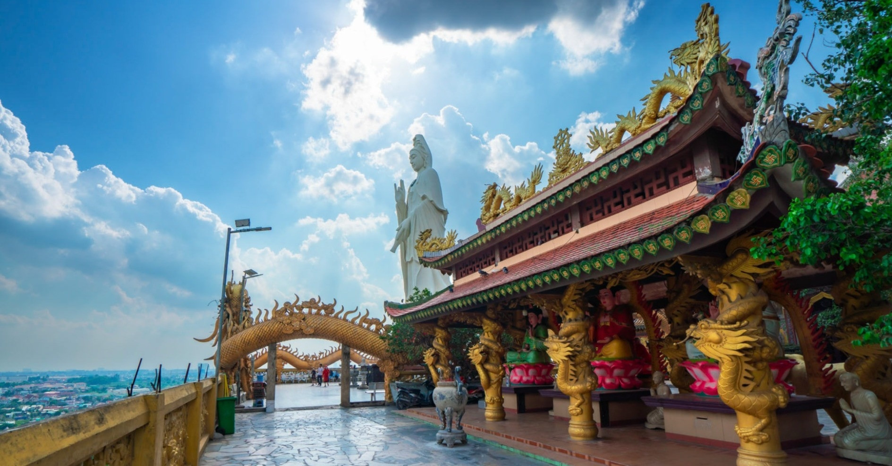
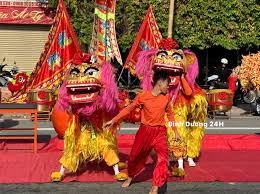
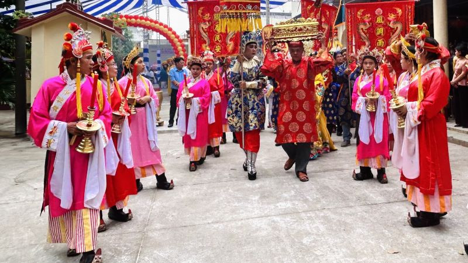

Sắc Màu Lễ Hội Bình Dương
Khám phá không gian văn hóa tâm linh rực rỡ, nơi lưu giữ những giá trị truyền thống tốt đẹp của người dân Bình Dương mỗi dịp xuân về.

Lễ Hội Chùa Bà
Nghi thức rước kiệu Bà tuần du mang ý nghĩa cầu mong Thiên Hậu Thánh Mẫu phù hộ cho muôn dân ấm no, vạn sự hanh thông.

Chùa Núi Châu Thới
Ngôi cổ tự danh tiếng tại Bình Dương, là nơi người dân chiêm bái, tìm về sự tĩnh tại và cầu mong bình an cho gia đình.

Lân Sư Rồng Bình Dương
Những điệu múa oai hùng từ các đoàn lân nổi tiếng Bình Dương, tượng trưng cho sức mạnh và khát vọng đón nhận tài lộc đầu năm.

Lễ Hội Kỳ Yên
Lễ cúng thần tại các ngôi đình cổ ở Bình Dương, thể hiện đạo lý "Uống nước nhớ nguồn" và lời cầu chúc mưa thuận gió hòa.